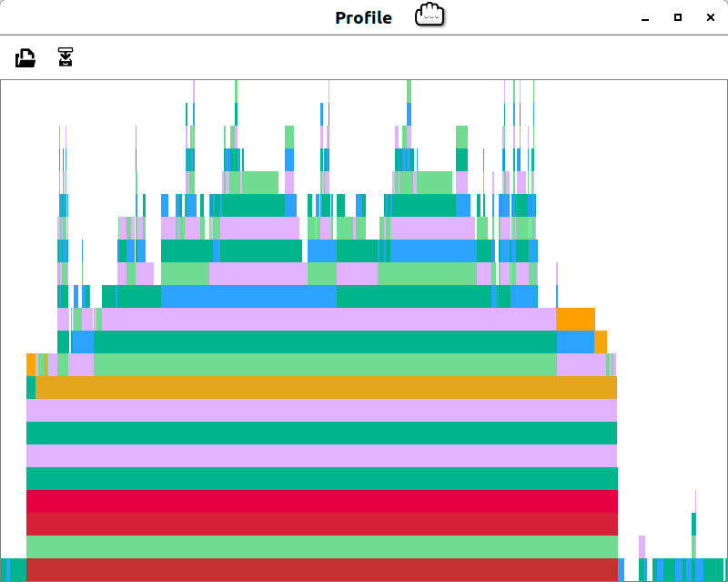

Palindromes<:CombinedParser: a Tutorial for writing your combinable Parser
Palindromes are an interesting example for parsing because intuitively programmers as well as laymen understand the problem:
The text is identical when read from left to right, as we are used to do, or when read from right to left in reverse, when we read only the letters and discard all non-word characters.
This example enables you to write and optimize your custom CombinedParser based off a minimal template.
using CombinedParsers
using CombinedParsers.Regexp1. Regular Expression
The PCRE test case contains nice examples of non-trivial palindromes.
# Defines parsers and output for pcre tests:
CombinedParsers.Regexp.@pcre_tests;
# The regular expression in the first quoted line is cryptic.
pt = pcre_test"""
/^\W*+(?:((.)\W*+(?1)\W*+\2|)|((.)\W*+(?3)\W*+\4|\W*+.\W*+))\W*+$/i
1221
0: 1221
1: 1221
2: 1
Satan, oscillate my metallic sonatas!
0: Satan, oscillate my metallic sonatas!
1: <unset>
2: <unset>
3: Satan, oscillate my metallic sonatas
4: S
A man, a plan, a canal: Panama!
0: A man, a plan, a canal: Panama!
1: <unset>
2: <unset>
3: A man, a plan, a canal: Panama
4: A
Able was I ere I saw Elba.
0: Able was I ere I saw Elba.
1: <unset>
2: <unset>
3: Able was I ere I saw Elba
4: A
\= Expect no match
The quick brown fox
No match
"""Pattern: r(e)"^\W*+(?:((.)\W*+(?1)\W*+\2|)|((.)\W*+(?3)\W*+\4|\W*+.\W*+))\W*+$"i Test Examples: 1. 1221 2. Satan, oscillate my metallic sonatas! 3. A man, a plan, a canal: Panama! 4. Able was I ere I saw Elba. Not Examples: 1. The quick brown fox
As to why and how this PCRE pattern matches palindromes requires arcane reasoning even to the initiated:
re = Regex(pt.pattern...)r"^\W*+(?:((.)\W*+(?1)\W*+\2|)|((.)\W*+(?3)\W*+\4|\W*+.\W*+))\W*+$"i
I figure the expression is hard to construct and come up with. The easy part is that the pattern needs to ignore case "i and whitespace \W. The pattern makes intense use of backreferences and subroutines.
s=pt.test[3].sequence
match(re, s)RegexMatch("A man, a plan, a canal: Panama!", 1=nothing, 2=nothing, 3="A man, a plan, a canal: Panama", 4="A")The matched captures are purely technical (Pattern 4 is the first character).
Tree display of regex
I find it hard to understand the compact captures (.), even in a nested tree display:
cp = Regcomb(pt.pattern...)🗄 Sequence |> regular expression combinator with 4 capturing groups
├─ ^ AtStart
├─ (?>[^\W]*) CharNotIn |> Repeat |> Atomic
├─ |🗄... Either
│ ├─ (|🗄...) Either |> Capture 1
│ │ ├─ 🗄 Sequence
│ │ │ ├─ ([^\n]) CharNotIn |> Capture 2
│ │ │ ├─ (?>[^\W]*) CharNotIn |> Repeat |> Atomic
│ │ │ ├─ (?1) Subroutine
│ │ │ ├─ (?>[^\W]*) CharNotIn |> Repeat |> Atomic
│ │ │ └─ (?i\g{2}) Backreference |> set_options
│ │ └─ Always
│ └─ (|🗄...) Either |> Capture 3
│ ├─ 🗄 Sequence
│ │ ├─ ([^\n]) CharNotIn |> Capture 4
│ │ ├─ (?>[^\W]*) CharNotIn |> Repeat |> Atomic
│ │ ├─ (?3) Subroutine
│ │ ├─ (?>[^\W]*) CharNotIn |> Repeat |> Atomic
│ │ └─ (?i\g{4}) Backreference |> set_options
│ └─ 🗄 Sequence
│ ├─ (?>[^\W]*) CharNotIn |> Repeat |> Atomic
│ ├─ [^\n] CharNotIn
│ └─ (?>[^\W]*) CharNotIn |> Repeat |> Atomic
├─ (?>[^\W]*) CharNotIn |> Repeat |> Atomic
└─ |🗄... Either
├─ $ AtEnd
└─ (?=🗄) PositiveLookahead
└─ 🗄 Sequence |> map(#62)
├─ \n
└─ $ AtEnd
::Tuple{AtStart,Array{Char,1},Union{Always, Tuple{Any,Any,Any,Vararg{Any,N} where N}},Array{Char,1},AtEnd}
Why no backreference \1, why no subroutine (?2)? Theoretical linguists, I wonder, is the minimum number of capture groups 4, for a regular expression matching palindromes?
Writing a palindrome parser should be easier. And with julia compiler it should be faster.
Regular Expression performance
PCRE matching example 3 is fast
using BenchmarkTools
@benchmark match(re, s)BenchmarkTools.Trial: memory estimate: 352 bytes allocs estimate: 5 -------------- minimum time: 1.435 μs (0.00% GC) median time: 1.608 μs (0.00% GC) mean time: 1.596 μs (0.00% GC) maximum time: 12.384 μs (0.00% GC) -------------- samples: 10000 evals/sample: 10
In practice CombinedParsers Regcomb of the regular expression will detect palindromes too. Palindrome matching provides an interesting cross-parser performance benchmark.
@benchmark match(cp, s)BenchmarkTools.Trial: memory estimate: 98.47 KiB allocs estimate: 1407 -------------- minimum time: 159.337 μs (0.00% GC) median time: 177.008 μs (0.00% GC) mean time: 202.591 μs (10.54% GC) maximum time: 15.083 ms (97.60% GC) -------------- samples: 10000 evals/sample: 1
CombinedParsers.Regexp.Subroutine matching is slow because the current implementation is using state-copies of captures. (TODO: Capture Subroutines could be implemented as a stack?).
2. A non-word skipping Palindrome<:CombinedParser
This example of Palindrome<:CombinedParser is a much faster palindrome parser and more interesting and more easy to write. It mimics the human readable palindrome rule that is clear and quite easy to comprehend:
the text is identical when read from left to right, as we are used to do, or when read from right to left in reverse, when we read only the letters and skip all non-word characters.
This rule is efficient programming in natural language. After defining the parser, the third part of the example discusses the design of match iteration in CombinedParsers.
Parsing strategy
A custom parser needs a method to determine if there is a match and its extent at a position. How can this be implemented for a palindrome? There are two strategies:
- inside-out: start at a position as
center- expand
leftandrightfromcenteruntil they are at word characters - until word character left does not match word character at right.
- Succeed if a minimal length is met. Fail otherwise.
- expand
- outside-in: start
leftandright,- move positions towards
centeruntil they are at word characters and - succeed if left and right positions meet at the center,
- compare these characters, and proceed to the next positions if the word characters match or fail if there is a mismatch.
- move positions towards
The inside out strategy seems easier and faster.
Prerequisite: Skipping whitespace
For the string "two words", from the point of index 4 (' ' after "from") the next word character after skipping whitespace left and right are indices of 3 (two) and 7 (words). In Julia syntax, this is expressed in terms of direction (functions Base.prevind and Base.nextind return next index to left or right), and word_char::T, what makes up a word character (provided method CombinedParser.ismatch(char,parser::T)::Bool.)
@inline function seek_word_char(direction,str,i,
till=lastindex(str),
word_char=UnicodeClass(:L))
i=direction(str,i)
while i>0 && i<=till && !CombinedParsers.ismatch((@inbounds str[i]),word_char)
i=direction(str,i)
end
return i
end
( prev_index=seek_word_char(prevind, "two words", 4),
next_index=seek_word_char(nextind, "two words", 4) )(prev_index = 3, next_index = 7)
Subtyping <: CombinedParser{STATE,RESULT}.
Subtyping requires you to define the type of the parsing state (for julia compiler optimizations) and the type of the parsing result.
STATE = NamedTuple{(:left,:center,:right),Tuple{Int,Int,Int}}
RESULT = SubString
struct Palindrome{P} <: CombinedParser{STATE,RESULT}
word_char::P
end
Palindrome() = Palindrome(UnicodeClass(:L))Main.ex-example-palindromes.Palindrome
Matching: CombinedParsers._iterate
With the inside-out stratedy, the implementation greedily expands over non-word characters. Computing the first match at position is done by this method dispatch
function CombinedParsers._iterate(x::Palindrome,
str, till,
posi, after,
state::Nothing)
right_ = left_ = left = right = posi
while left>0 && right<=till &&
lowercase(@inbounds str[left])==lowercase(@inbounds str[right])
# if we cannot expand, (left_,right_) succeeded
right_ = right
left_ = left
left = seek_word_char(
prevind,str,
left,till,x.word_char)
right = seek_word_char(
nextind,str,
right,till,x.word_char)
end
left, left_, right_, right
if left_ == right_
nothing
else
tuple(nextind(str,right_),
(left=left_, center=posi, right=right_))
end
end_iterate matches the right part of the palindrome if and only if posi at the center of a palindrome.
The internal API calls (for the center index 18):
state = _iterate(Palindrome(),s,lastindex(s),18,18,nothing)(31, (left = 1, center = 18, right = 30))
Base.prevind and Base.nextind
CombinedParsers iterates through matches based on the parsing position and state.
Base.nextind(str,i::Int,p::Palindrome,state) =
nextind(str,state.right)Note that for the inside-out strategy the Palindrome<:CombinedParser matches from center and looks behind until right, possibly overlapping with the last match(es). The start index of a palindrome match is its center.
Base.prevind(str,after::Int,p::Palindrome,state) =
state.centermatch and get
_iterate is called when the public API match or parse is used. Match searches for a center index and then matched the state.center:state.right part of the palindrome.
p = Palindrome()
m = match(p,s)ParseMatch("ma")The result of a parsing is the matching substring from state.left:state.right, implementing Base.get with the full argument range:
Base.get(x::Palindrome, str, till, after, posi, state) =
SubString(str,state.left,state.right)The match result is matching the first palindrome, which is short and simple - but not yet what we want.
get(m)"A ma"
Iterating through matches
The longest palindrome is matched too:
p = Palindrome()
[ get(m) for m in match_all(p,s) ]7-element Array{SubString{String},1}:
"A ma"
"an, a"
"an, a"
"A man, a plan, a canal: Panama"
"ana"
"ana"
"ama"To skip trivial short palindromes we can use Base.filter
islong(sequence, till, posi, after, state) =
state.right-state.left+1 > 5
long_palindrome = filter(islong,Palindrome())
get(match(long_palindrome,s))"A man, a plan, a canal: Panama"
Iteration of smaller Sub-palindromes
The set of all palindromes in a text includes the shorter palindromes contained in longer ones. Provide a method to iterate the previous state:
"Shrinking `state` match"
function CombinedParsers._iterate(x::Palindrome, str, till, posi, after, state)
left_, posi_, right_ = state
left = seek_word_char(
nextind,str,
left_,till,x.word_char)
right = seek_word_char(
prevind,str,
right_,till,x.word_char)
if left >= right # left == posi
nothing
else
tuple(nextind(str,right),
(left=left, center=posi_, right=right))
end
end
[ get(m) for m in match_all(p,s) ]16-element Array{SubString{String},1}:
"A ma"
"an, a"
"an, a"
"A man, a plan, a canal: Panama"
"man, a plan, a canal: Panam"
"an, a plan, a canal: Pana"
"n, a plan, a canal: Pan"
"a plan, a canal: Pa"
"plan, a canal: P"
"lan, a canal"
"an, a cana"
"n, a can"
"a ca"
"ana"
"ana"
"ama"Note that the greedy-only behaviour was atomic in terms of regular expression, which can be restored with Atomic
p = Atomic(Palindrome())
get.(match_all(p,s)) |> collect7-element Array{SubString{String},1}:
"A ma"
"an, a"
"an, a"
"A man, a plan, a canal: Panama"
"ana"
"ana"
"ama"Performance Optimization
@benchmark match(long_palindrome,s)BenchmarkTools.Trial: memory estimate: 272 bytes allocs estimate: 2 -------------- minimum time: 2.161 μs (0.00% GC) median time: 2.322 μs (0.00% GC) mean time: 2.394 μs (0.00% GC) maximum time: 9.765 μs (0.00% GC) -------------- samples: 10000 evals/sample: 9
After writing a CombinedParser
# using Profileis recommended to investigate options to optimize.
# f(n) = for _ in 1:n; match(fast_palindrome,s); end
# @profile f(10000)
# Profile.clear()
# @profile f(1000000)
# ProfileView.view()\n\n Combinedparsers was optimized for minimal garbage collection (Red bars indicating garbage collection are in the f function).
Here, replacing the UnicodeClass matcher (calling categorycode) with a fast tuple == check shaves off some extra time:
fast_palindrome = filter(islong,Palindrome(CharNotIn(tuple(" ,!:"...))))
@benchmark match(fast_palindrome,s)BenchmarkTools.Trial: memory estimate: 288 bytes allocs estimate: 2 -------------- minimum time: 1.275 μs (0.00% GC) median time: 1.511 μs (0.00% GC) mean time: 1.541 μs (0.00% GC) maximum time: 6.011 μs (0.00% GC) -------------- samples: 10000 evals/sample: 10
Note, that CharNotIn(tuple(" ,!:"...)) is faster than the default CharNotIn(" ,!:"...) using Base.Set in case of very few Chars.. Further possible optimization are
- Caching prevind, nextind
- Memoization
Padding and combining
Note that the PCRE pattern included outside non-words, specifically the tailing !.
re = Regex(pt.pattern...)
match(re," "*s)RegexMatch(" A man, a plan, a canal: Panama!", 1=nothing, 2=nothing, 3="A man, a plan, a canal: Panama", 4="A")`CombinedParsers are designed with iteration in mind, and a small match set reduces computational time when iterating through all matches. Palindrome matches palindromes with word-char boundaries. The PCRE pattern includes non-words matches in the padding of palindromes, a superset of Palindrome. PCRE-equivalent matching can be achieved by combining the stricly matching Palindrome with parsers for the padding.
padding=Repeat(CharNotIn(fast_palindrome.parser.word_char))
match(fast_palindrome*padding*AtEnd(),s) |> get("A man, a plan, a canal: Panama", ['!'], re"$")Palindrome matches from center to right, like a lookbehind parser. Padding to the left is not matched:
match(fast_palindrome*padding*AtEnd()," "*s) |> get("A man, a plan, a canal: Panama", ['!'], re"$")Also, the left part can be parsed separately.
match(!Repeat(AnyChar())*fast_palindrome*padding*AtEnd()," "*s) |> get(" A man, a plan, a ", "A man, a plan, a canal: Panama", ['!'], re"$")A prefix parser to the left requires a parser for the left-part coupled by filter:
palindrome = filter(
Sequence(
2,
Lazy(Repeat(AnyChar())),
Atomic(Palindrome()))) do sequence, till, posi, after, state
# posi is the start of the sequence
posi==state[2].left
end🗄 Sequence |> map(#62) |> FilterParser ├─ .*? AnyChar |> Repeat |> Lazy └─ (?>) Main.ex-example-palindromes.Palindrome |> Atomic ::SubString
Now we can express the full pattern
p = padding * (palindrome) * padding * AtEnd()
match(p,"skipped: "*s)ParseMatch(": A man, a plan, a canal: Panama!")This extra complexity comes at a cost:
@benchmark match(p,$("skipped: "*s))BenchmarkTools.Trial: memory estimate: 6.05 KiB allocs estimate: 171 -------------- minimum time: 71.909 μs (0.00% GC) median time: 74.843 μs (0.00% GC) mean time: 75.513 μs (0.00% GC) maximum time: 190.906 μs (0.00% GC) -------------- samples: 10000 evals/sample: 1
Next...
- optimize with memoization
- match also palindromes with odd number of letters
- elaborate on iteration documentation
- comparative benchmarking, conditional on palindrome length
This page was generated using Literate.jl.